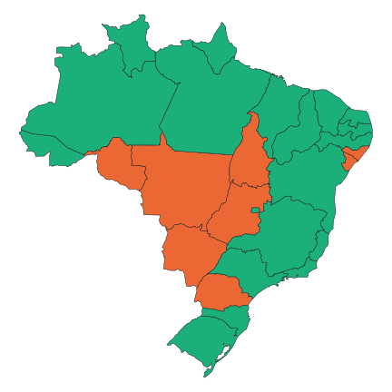

Metodologia
Este site mostra, município a município, como os anos de El Niño e La Niña afetaram o clima e a produtividade agrícola no Brasil, para embasar o entendimento de eventos futuros.
1. Fontes de dados
| Dado | Fonte | Período |
|---|---|---|
| Meteorologia diária (chuva, temperaturas, radiação, vento, umidade) | Base Xavier v3.2.4 — dados em grade interpolados no centroide de cada município (centroides da base contínua do IBGE 1:250k, 2023). Exportação: Daniel Victoria (Embrapa), jun/2026 | 1980–2025 |
| Evapotranspiração potencial (ETP) e índices de seca SPI/SPEI | Derivados da base Xavier | 1980–2025 |
| Produção agrícola municipal (área, produção, valor) | IBGE — Pesquisa Agrícola Municipal (PAM) | 1974–2024 |
| Calendário de plantio (mês de início por UF e cultura) | CONAB — define a janela ENSO de cada cultura | — |
| Índice RONI (Relative Oceanic Niño Index) — classificação ENSO | NOAA / Climate Prediction Center | 1950–presente |
| Índice ONI (Oceanic Niño Index) — comparação | NOAA / Climate Prediction Center (oni.ascii.txt) |
1950–presente |
2. Classificação dos anos em El Niño, La Niña e Neutro
Usamos o RONI (Relative Oceanic Niño Index), o índice que a NOAA adotou em 2026 para monitorar o ENSO. Como o ONI tradicional, ele mede a anomalia de temperatura da superfície do mar na região Niño 3.4 do Pacífico em médias móveis de 3 meses — mas desconta o aquecimento médio de todo o cinturão tropical. Isso corrige um problema do ONI: com o aquecimento global, a base de 30 anos ficou defasada e passou a classificar como El Niño episódios relativamente fracos. O RONI ≥ +0,5 °C conta como El Niño; ≤ −0,5 °C como La Niña; entre os dois, Neutro.
Na prática, vários El Niños recentes enfraquecem sob o RONI: o evento de 2023/24, por exemplo, tinha pico ONI de +2,1 °C (muito forte) mas RONI de +1,5 °C. Mantemos o ONI no site (tooltips e este texto) apenas para comparação; a classificação das fases usa o RONI.
Convenção de ano-safra
A safra de verão brasileira é plantada de setembro a dezembro e colhida no ano seguinte — e o pico do El Niño ocorre justamente na virada do ano. Por isso cada ano-safra t (safra colhida no ano t, que é como a PAM registra) recebe a fase RONI predominante entre outubro de t−1 e março de t — a janela de plantio e desenvolvimento da lavoura. Em caso de empate, decide o sinal do RONI de pico.
Eventos fortes
Safra com |RONI de pico| ≥ 1,5 °C é marcada como evento forte (El Niño: 1983, 1992, 1998, 2016; La Niña: 1989, 1999, 2000, 2008, 2011, 2021, entre outros). Nos gráficos, esses anos ganham destaque, pois os impactos agrícolas são tipicamente maiores.
Janela ENSO por cultura (gráficos de produtividade)
A janela de 6 meses acima classifica o clima da safra. Já os gráficos de produtividade usam uma janela ENSO específica de cada cultura em cada estado, derivada do calendário de plantio da CONAB: a janela cobre os 3 meses a partir do mês de plantio + 1 (fase de desenvolvimento da lavoura), no ano da colheita. Ex.: plantio em outubro → janela nov–dez–jan.
- Milho (total): usa a janela da safra dominante do estado (mapa acima) — 1ª ou 2ª safra.
- Feijão: usa a data da 1ª safra (a PAM não separa as safras do feijão).
- Cana-de-açúcar: não consta no calendário CONAB (é semiperene); usa a janela padrão dez–jan–fev.
- Estado sem data para a cultura: usa o mês de plantio mais comum daquela cultura no Brasil.
Assim, uma mesma safra pode ser El Niño para a soja (nov–dez–jan) e La Niña para o trigo (jun–jul–ago) num mesmo estado — porque os períodos críticos são diferentes. Cada janela de 3 meses é um valor RONI; os limiares ±0,5 e o "forte" (|RONI| ≥ 1,5) valem igual. A janela usada aparece ao lado do seletor de cultura no painel.
Janela ENSO usada em cada estado e cultura (verificável contra o CONAB). Cada célula mostra mês de plantio (CONAB) → janela ENSO de 3 meses. A cor indica o ano do ENSO em relação à colheita registrada na PAM: vermelho = ano anterior à colheita (culturas de verão, plantio out–dez, colhidas no ano seguinte); cinza = mesmo ano da colheita (trigo/inverno e 2ª safra). † = estado sem data no CONAB, usa a moda nacional da cultura; * = cana (sem CONAB), janela padrão.
3. Indicadores climáticos
- SPI (Standardized Precipitation Index): chuva do período comparada ao histórico do próprio município, em desvios-padrão. 0 = normal; −1 = seco; −2 = seca severa; valores positivos = úmido.
- SPEI: como o SPI, mas desconta a evapotranspiração potencial — captura também o efeito do calor. As escalas 1/3/6/12 acumulam 1, 3, 6 ou 12 meses. SPEI-6 medido em março cobre exatamente a janela out–mar da safra, por isso é o índice de referência do mapa.
- Balanço hídrico: chuva − ETP do mês, em mm.
- Veranico: maior sequência de dias consecutivos com chuva < 1 mm no período (mês ou janela out–mar). Estiagens dentro da estação chuvosa são um dos principais mecanismos de perda de produtividade.
- Dias de calor extremo: dias com máxima > 34 °C — limiar usual de estresse térmico na floração de culturas como soja e milho.
- Início das chuvas (onset): primeiro dia, a partir de 1º de setembro, com ≥ 20 mm acumulados em 3 dias e sem estiagem > 10 dias nos 20 dias seguintes. Sem onset até 31 de janeiro = ausente naquele ano. O atraso do onset atrasa o plantio.
- Chuva da safra: total de outubro a março. No mapa, o valor em anos de cada fase é comparado à média 1981–2025 do próprio município.
- Soma térmica (graus-dia, base 10 °C): soma, ao longo do período, de (temperatura média diária − 10 °C), contando zero nos dias abaixo de 10 °C. Mede o acúmulo de calor disponível para o desenvolvimento das culturas.
- Radiação acumulada: soma da radiação solar global (MJ/m²) no período — energia disponível para a fotossíntese.
O gráfico de acumulados de 4 meses soma chuva, soma térmica e radiação numa janela de quatro meses a partir do mês escolhido (a janela pode atravessar a virada do ano e é atribuída à safra correspondente), mostrando um ponto por ano colorido pela fase ENSO daquela safra.
4. Produtividade agrícola (PAM)
Rendimento = produção (t) × 1000 ÷ área colhida (ha), em kg/ha.
Rendimento cresce com tecnologia ao longo das décadas; para isolar o efeito do clima usamos a anomalia em relação à tendência local: ajustamos uma curva suave (loess, span 0,5) à série 1974–2024 de cada município × cultura e medimos o desvio percentual de cada ano em relação a ela. Exigimos ao menos 15 anos válidos; para séries mais curtas usamos a variação percentual ano-a-ano (limitada a ±200%).
Culturas: soja, milho, arroz, feijão, trigo e cana-de-açúcar. Abacaxi foi excluído porque a PAM o reporta em mil frutos (rendimento em kg/ha não é comparável); o agregado "Outras" foi excluído por misturar culturas heterogêneas.
Nos gráficos de produtividade, além do município mostramos o valor do estado (UF): o rendimento agregado da unidade federativa (soma da produção ÷ soma da área colhida — portanto ponderado pela área de cada município) e sua anomalia média por fase. Serve de referência regional para situar o município.
Milho: 1ª e 2ª safra
A partir de 2003 a PAM separa o milho em 1ª safra (verão, sensível ao ENSO como as demais culturas de verão) e 2ª safra ("safrinha", plantada após a soja e colhida no meio do ano). O painel do município oferece as três séries — milho total (desde 1974), 1ª e 2ª safra (desde 2003). No mapa, como a cor é única por município, cada estado exibe a safra de maior produção no estado (safra dominante):

5. O que o mapa mostra
Cada métrica do painel esquerdo é pré-calculada por município: média do indicador nos anos de cada fase (El Niño / La Niña / Neutro), comparada quando faz sentido à média histórica de todos os anos. A escala de cores é divergente e simétrica (percentil 95 dos valores absolutos), com marrom = mais seco/pior e verde-azulado = mais úmido/melhor.
6. Limitações
- Clima interpolado no centroide municipal — municípios muito extensos podem ter variação interna relevante.
- Fernando de Noronha não tem série climática na base; 5 municípios criados após 2013 não têm polígono na malha usada.
- A PAM registra ano civil; a convenção de ano-safra usada aqui é uma aproximação — para o milho segunda safra (colhido no meio do ano) a correspondência é menos direta.
- Amostras pequenas: mesmo com 45 safras, cada fase tem ~10–18 anos; um único ano atípico pesa. Os grupos por fase descrevem tendência histórica, não garantia para o próximo evento.
- Anomalia por fase ENSO é associação, não atribuição causal: outros modos climáticos (ex.: Dipolo do Atlântico/Índico) modulam os impactos.
7. Reprodutibilidade
Todo o processamento é feito em scripts R versionados no repositório do projeto
(scripts/01_oni.R a 07_estado.R), partindo dos dados
brutos citados na seção 1. O site é 100% estático: os mesmos arquivos CSV exibidos
nos gráficos são os oferecidos no botão de download de cada município.